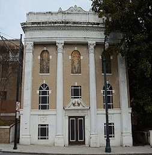

Today, Herndon's business, Atlanta Life, operates in the 191 Peachtree high-rise. That address would have been off-limits for his family and other Sweet Auburn pioneers.
"The fight for desegregation was a double-edged sword. It released the confines and the boundaries, and people went elsewhere." That exodus - coupled with highway construction - hastened the area's decline.